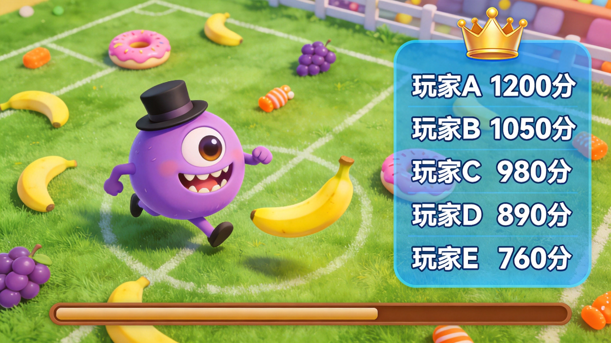
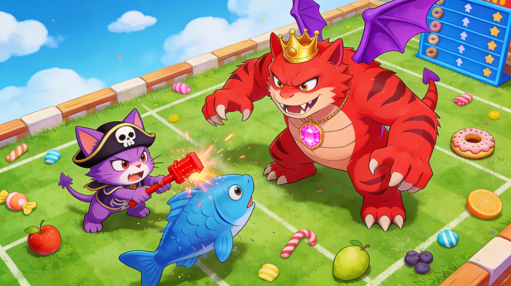
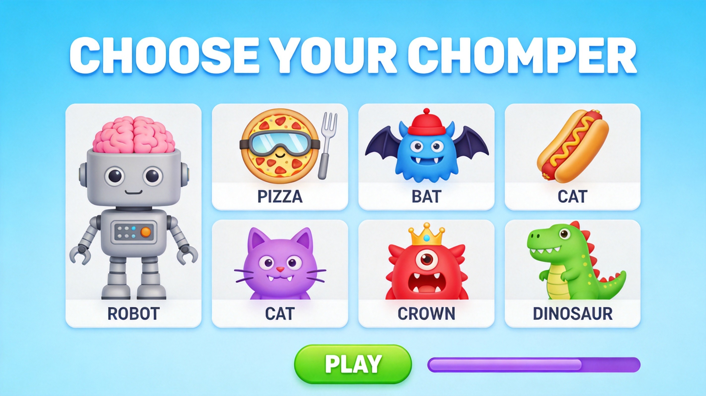

Introduction
Chompers.io is an intense, evolution-based multiplayer arena game where you control a magical creature competing to become the ultimate apex predator. What makes it truly unique is its deep evolutionary system; as you devour treats and defeat opponents, you earn experience to unlock strategic upgrades that permanently alter your monster's abilities, size, and attack power during the match. Players love it because it perfectly blends the accessible, fast-paced mouse controls of classic .io games with meaningful tactical depth. Every decision you make, from choosing between speed or attack upgrades to deciding when to strike or retreat, shapes your playstyle. Whether you are hunting smaller prey or outsmarting larger rivals, the thrill of growing from a tiny creature into a massive arena dominator keeps the gameplay incredibly engaging and highly replayable.
Getting Started

Starting your journey in Chompers.io is effortless. Simply visit the game page on Spunky Play and hit the play button to jump directly into the action without any downloads or registrations. Once in the arena, you will control your magical creature using intuitive mouse mechanics. Move your mouse to guide your monster's direction across the battlefield. Use the left mouse button to attack nearby enemies or consume scattered food treats. When you need to chase down fleeing prey or escape a dangerous predator, hold the right mouse button to activate a sprint, which consumes your energy meter. Your primary objective is to eat food and defeat other players to gain experience points. As you level up, you will be presented with evolution choices. These upgrades allow you to enhance your creature's stats, such as increasing your speed, boosting your attack damage, or improving your defense. Mastering these basic controls and understanding when to use your sprint energy will set the foundation for your survival and growth in this competitive arena.
Basic Tips
To survive and thrive in your early matches of Chompers.io, keep these essential tips in mind. First, prioritize speed upgrades during your initial evolutions. Moving faster allows you to safely gather food and easily escape from larger, more aggressive monsters before they can catch you. Second, always check your surroundings before engaging in a fight. Look out for bigger threats approaching from off-screen, as getting caught off guard can end your run instantly. Third, manage your sprint energy wisely. Do not hold the right mouse button continuously; instead, use short, strategic bursts of speed to dodge attacks or secure a quick kill. Fourth, target players of a similar size to you. Hunting smaller creatures yields less experience, while attacking much larger opponents is usually a fatal mistake. Finally, utilize the arena edges to your advantage. When overwhelmed, retreating toward the boundaries can limit the angles from which enemies can attack you, giving you a crucial defensive edge.
Advanced Strategies

Once you master the basics, implement these advanced strategies to dominate the Chompers.io leaderboard. First, control food-dense areas early in the match. By positioning yourself in resource-rich zones, you ensure steady growth while forcing opponents to enter your territory, allowing you to ambush them. Second, use the circle-strafing combat tactic during fights. When attacking larger or equally sized enemies, continuously move your mouse in a circular motion around them. This evasive maneuvering helps you avoid their counterattacks while keeping your own strikes landing consistently. Third, capitalize on distracted opponents. If you see two other players fighting each other, wait for the right moment to strike the weakened survivor for an easy elimination and maximum experience gain. Fourth, balance your evolution path based on the current leaderboard. If the top players are massive and slow, prioritize speed and agility upgrades to outmaneuver them. If the arena is full of fast, aggressive hunters, invest in defensive and health evolutions to survive their initial assaults.
Pro Tips

Separate yourself from average players with these expert-level techniques. First, visually assess threat levels instantly by comparing your size to others, allowing you to make split-second decisions on whether to fight or flee. Second, never waste your sprint energy on long, drawn-out chases that leave you exhausted and vulnerable to third-party ambushes. Third, when your health is low, strategically retreat to high-food areas to regenerate and heal quickly rather than hiding in empty zones. Finally, save your dash energy for critical moments, such as securing a final blow on a fleeing target or making a last-second escape when trapped by a larger predator.
🎮 Controls & Mechanics Deep Dive
If you think Chompers.io plays exactly like every other .io game out there, you're in for a rude awakening. The core movement is tied to your mouse cursor, but the underlying physics change drastically as you evolve. Understanding these hidden mechanics is the difference between topping the leaderboard and getting eaten in the first two minutes.
Here is a breakdown of the core mechanics you need to master:
- Dynamic Hitboxes & Momentum: As your creature evolves and grows in size, your hitbox scales up with you. But it’s not just about looking big; your momentum increases. A max-level apex predator takes significantly longer to change direction. You can't just do tight zig-zags when you're massive. You have to anticipate enemy movements and start your turns early.
- Acceleration vs. Top Speed: Smaller, early-game forms have incredible acceleration but cap out at a lower top speed. As you evolve into heavier forms, your acceleration drops, but your top speed and boost efficiency increase. This means early game is about twitch reflexes, while late game is about positioning and predicting trajectories.
- The Evolution Menu: You don't just level up automatically. When you gather enough treats or score an elimination, you get evolution points. You can pause your movement (briefly) to allocate these points into damage, armor, speed, or special abilities. Timing when you open this menu is crucial—never do it when you're cornered!
- Collision & Bite Mechanics: Damage isn't just about touching. You have to align your creature's "mouth" or primary attack hitbox with the opponent's weak spot (usually the back or side). Head-on collisions result in a stalemate where both take damage based on their mass and armor stats.
Also, keep an eye on your stamina bar if you're using the boost mechanic. Boosting burns through your mass/energy reserves. If you spam it, you'll literally shrink and lose your hard-earned evolution advantages.
🎯 Game Modes Breakdown
Jumping into a random server is fun, but each game mode in Chompers.io requires a totally different mindset. Here’s what you’re up against depending on where you queue.
- Free-For-All (FFA): The classic .io experience. Up to 30 players drop into a massive map, and it’s every monster for themselves. The objective is simple: be the biggest, baddest creature on the server when the timer runs out. In FFA, survival is just as important as aggression. You’ll want to play a bit more cautiously in the early game, secure your evolution path, and only pick fights you know you can win.
- Team Clash: This mode splits the server into two or three distinct factions. Communication and coordination are your best friends here. You can literally feed your treats to a smaller teammate to help them evolve faster. The strategy shifts from pure individual survival to protecting your team's "carry" or swarming a lone enemy who overextended.
- Shrinking Arena (Battle Royale): The map starts huge, but the safe zone continuously shrinks, dealing massive damage to anyone caught outside the boundary. This forces players into the center, guaranteeing late-game chaos. You need a fast early-game evolution path to secure the center treats, and a high-damage late-game build to survive the final 1v1 showdowns in the tiny arena.
- Practice Sandbox: Don't sleep on this mode! It’s completely stress-free and lets you test out different evolution builds against AI or just explore the map. Use this to figure out how your turning radius changes at max level, or to test which ability combinations actually synergize well before taking them into a ranked FFA match.
🚀 Advanced Strategies & Pro Tips
Once you’ve got the basics down, it’s time to start playing the player, not just the game. Here are some advanced tactics to help you dominate the server.
The "Evolution Bait"
This is a classic psychological play. When you’re close to getting your next evolution point, intentionally hover near a larger, aggressive player. Let them think you’re an easy snack. As they commit to the chase and use their boost, pop your evolution menu and instantly upgrade into a high-armor or high-damage form. They’ll crash right into your upgraded hitbox and regret their life choices.
Slingshotting with Momentum
Remember how we talked about momentum? You can use it to your advantage. If you’re a larger, heavier creature being chased by a faster, smaller one, don't just run in a straight line. Run in a wide, sweeping arc. When the smaller player tries to cut you off, use your massive momentum to slingshot around them, snapping your jaws shut on their tail as they overshoot.
Resource Starvation
If you spot a smaller player trying to evolve in a specific quadrant of the map, don't just kill them. Instead, eat every single treat in their immediate vicinity. Force them to migrate to a more dangerous, contested area to get their XP. A hungry, under-leveled opponent is much easier to pick off than one who is comfortably farming in the corner.
Counter-Building
Pay attention to what the top players on the server are building. If the #1 player is stacking pure speed and damage, you need to counter them. Don't try to out-speed a speed build. Instead, stack armor and health regeneration. Let them crash into you, absorb the hit, and punish them when their boost runs out. Adapt your evolution tree to counter the current lobby meta.
❓ Frequently Asked Questions
Is Chompers.io completely free to play?
Yes, 100% free. It’s a browser-based .io game, so there are no upfront costs, subscriptions, or pay-to-win mechanics. You might see some optional cosmetic skins or ad-removal options depending on the platform, but your core gameplay and evolution mechanics are never locked behind a paywall.
Can I play Chompers.io on my phone or tablet?
Absolutely. The game is fully optimized for mobile browsers. The controls automatically switch to a virtual joystick and on-screen buttons for boosting and evolving. Just keep in mind that playing on a smaller screen can make it harder to spot enemies approaching from the periphery, so a tablet is usually better than a phone for competitive play.
How do I play with my friends?
When you’re in the main menu, look for the "Create Private Room" or "Custom Lobby" option. This will generate a unique room code. Share that code with your friends, and they can type it into the "Join Room" box to drop into the same server. It’s the best way to practice team strategies or just mess around without randoms ruining the vibe.
What’s the best evolution path for beginners?
If you're just starting out, go for a "Balanced Bruiser" build. Put two points into movement speed, two into health/armor, and two into bite damage. This gives you enough speed to catch treats and escape bad situations, enough health to survive a few mistakes, and enough damage to secure kills. Once you get a feel for the physics, you can start experimenting with extreme glass-cannon or pure tank builds.
Why do I keep losing my upgrades when I die?
That’s the core risk/reward loop of Chompers.io! When you get eliminated, you respawn as a tiny, base-level creature and have to start your evolution tree all over again. This prevents one player from snowballing out of control for the entire 20-minute match. It keeps the game competitive and ensures that every single life matters. Play smart, don't get greedy, and always have an escape route planned!
Conclusion
Chompers.io offers a thrilling blend of fast-paced action and deep strategic evolution. By mastering your movement, managing your energy, and making smart upgrade choices, you can transform from a small creature into the ultimate arena predator. Jump into the Spunky Play arena today, test your survival skills, and climb the global leaderboard to prove you are the apex monster!